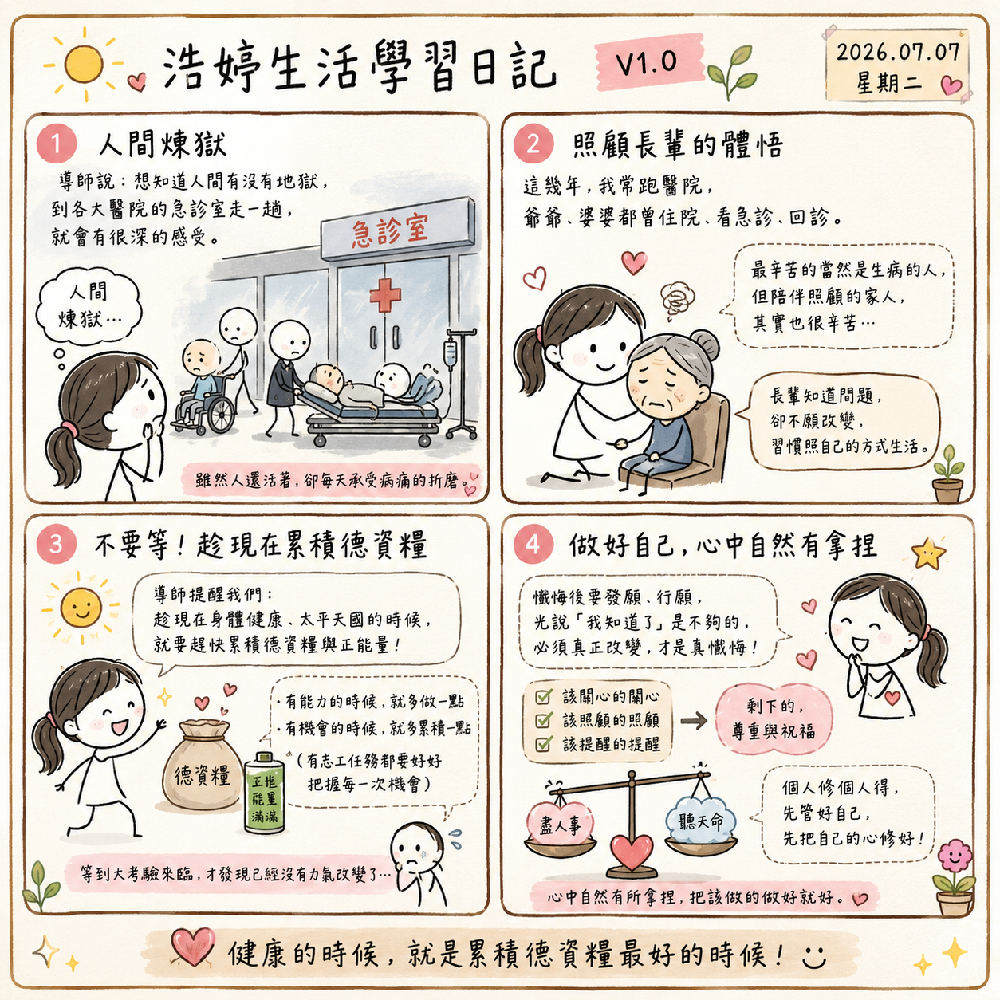

日期：2026/07/07

今天晚上在準備明天菁英會的預習時，有一段內容讓我特別有感。導師提到，如果想知道人間有沒有地獄，其實到各大醫院的急診室走一趟，大概就能感受到什麼叫做人間煉獄。很多人生了重病，雖然人還活著，卻每天承受著病痛的折磨。看到這一段，我心裡真的很有感觸。
因為這幾年，我真的很常跑醫院。爺爺、婆婆，都曾經因為身體的狀況住院、看急診、回診。老實說，現在醫院的流程，我大概都快比自己家還熟悉了。每次走進醫院，我都會有一種很深的感受。
最辛苦的，當然是生病的人。可是陪伴在旁邊照顧的家人，其實也很辛苦。尤其看到長輩身體不舒服，心裡真的會很捨不得。
不過，這幾年也讓我慢慢體會到一件事。很多長輩其實都知道自己的身體出了問題，也知道醫生建議怎麼做，可是有時候就是不願意改變，還是習慣照自己的方式生活。
以前遇到這樣的情況，我總是很想跟他們講道理，希望他們可以聽進去。講不聽，就直接對決用駡的。可是後來我發現，有些事情真的不是你一直勸，或是一直駡，對方就一定會改變，因此都是浪費時間的無效溝通。
今天讀到這一段時，我想到導師一直提醒我們，要趁現在身體健康、太平天國的時候，就趕快累積自己的德資糧與正能量。不要等到人生真的遇到大考驗了，才開始想要改變。
因為到了那個時候，可能身體沒有力氣了，心也沒有力量了，就算想懺悔、想修正自己，也會變得更加辛苦。
所以我也提醒自己，真的不要等。有能力的時候，就多做一點；有機會的時候，就多累積一點。（有志工任務都要好好把握每一次機會）
今天導讀裡還有一句話，導師說，懺悔之後還要發願、還要行願，不然就只是自欺欺人。不是嘴巴說一句「我知道了」、「我錯了」就好了，而是真的願意開始改變，願意一步一步去做，這樣才是真正的懺悔。
另外，這幾年照顧長輩，也讓我學會了一件事。就是做好自己該做的就好。該關心的關心，該照顧的照顧，該提醒的提醒。至於對方願不願意改變，我慢慢學著尊重，也學著祝福。
因為每一個人都有自己的課題，也都有自己的人生功課。導師常說：「個人修個人得。」以前我還會一直想改變別人，現在我知道了，先管好自己就好，先把自己的心修好，比較重要。
書中導師有提到一句話：「心中自然有所拿捏。」我很喜歡這一句。現在遇到很多事情，我不會再像以前一樣急著爭辦，也不會一直想證明自己是對的。我只是提醒自己，把該做的做好，把該盡的責任盡到，剩下的，就交給每個人自己的選擇。
很感恩自己一路持續在《超級生命密碼》裡學習。如果沒有這些年的學習，我想，我可能還是很容易生氣、很容易抱怨。現在的我，雖然還有很多地方需要學習，但至少我知道，我的心真的比以前柔軟了許多，沒有以前那麼的火爆了。哈哈～